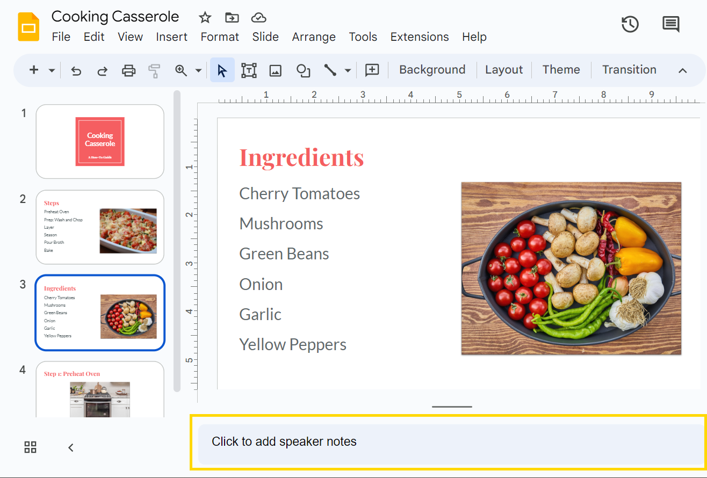
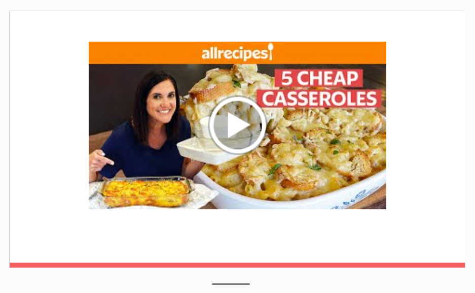
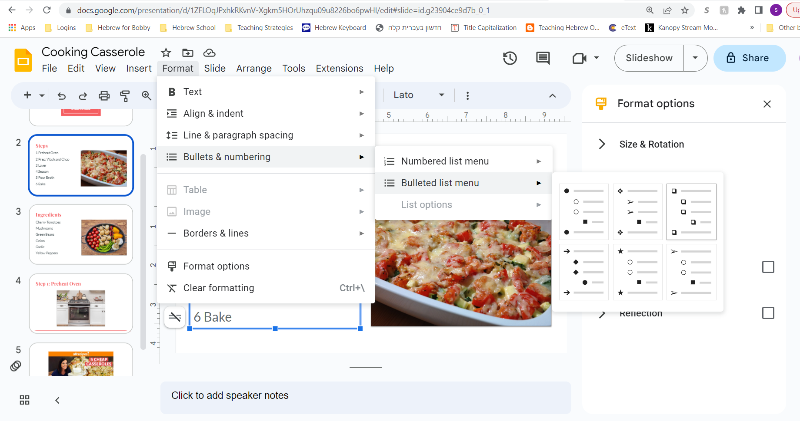

Extend Yourself - Google Slides: Step-by-Step
 Add a Script to the Speaker Notes Section
Add a Script to the Speaker Notes Section
Write a script for your presentation and add it into the Notes section. Simply click in the bar below the slide, where you see “Click to add speaker notes.”

Add a Video
Make a video recording of yourself doing the task to add into the Google Slides presentation.
Google Slides allows you to add videos from Google Drive, YouTube, or other websites. You can find instructions here: Insert or delete images & videos (Scroll down for video instructions)

Share a Checklist
Checklists can help people make sure all steps are completed. Create a checklist of steps (in Google Slides) for people to use to do your task.
To make a checklist, list your steps. But instead of using numbers to make your list, go to the Insert > Bullets & numbering > Bulleted list menu and then choose the checkboxes.
Now, if you were to download and print your presentation, you would have a handy checklist to share.
